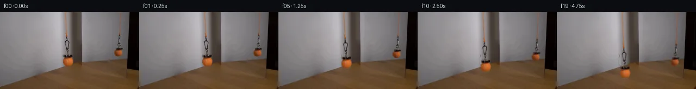

![首帧]()

Round 00
2026-11-05T12:56:17.899758+00:00像素候选变化代码 +242/−0inspection 更新
pixels ffe894d30aba7936 · code 7bedd89537bce574
查看本轮 generate.py 真实 diff
--- previous/generate.py
+++ current/generate.py
@@ -0,0 +1,242 @@
+"""Deterministic local pixel compositing of the source and its reflection."""
+from pathlib import Path
+import json
+import numpy as np
+from PIL import Image, ImageDraw
+from scipy import ndimage
+import cv2
+from artifact_io import save
+
+ROOT = Path(__file__).resolve().parent
+TMP = ROOT / '.tmp'
+TMP.mkdir(exist_ok=True)
+SOURCE = np.asarray(Image.open(ROOT / 'first_frame.png').convert('RGB'))
+I = SOURCE.astype(np.float64)
+H, W = I.shape[:2]
+YY, XX = np.mgrid[:H, :W].astype(np.float32)
+
+
+def robust_poly(y, vals, degree=3):
+ z = (np.asarray(y) - 40.0) / 40.0
+ design = np.stack([z ** k for k in range(degree + 1)], axis=1)
+ weight = np.ones(len(z))
+ for _ in range(8):
+ coef = np.linalg.lstsq(design * weight[:, None], vals * weight[:, None], rcond=None)[0]
+ err = np.max(np.abs(design @ coef - vals), axis=1)
+ weight = np.minimum(1.0, 2.0 / np.maximum(err, 0.01))
+ zz = (np.arange(H) - 40.0) / 40.0
+ return np.stack([zz ** k for k in range(degree + 1)], axis=1) @ coef
+
+
+def main_background():
+ b = I.copy()
+ # A column profile keeps the sharp vertical lighting gradient of the recess.
+ ref = np.median(I[30:43], axis=0)
+ for x in range(120, 124):
+ ref[x] = ref[119] + (ref[125] - ref[119]) * (x - 119) / 6.0
+ clean_wall = I[:78].copy()
+ for y in range(43, 78):
+ for x in range(119, 128):
+ w = (x - 118) / 10.0
+ clean_wall[y, x] = ref[x] + (I[y, 118] - ref[118]) * (1-w) + (I[y, 128] - ref[128]) * w
+ for x in range(120, 124):
+ for y in range(43):
+ w = (x - 119) / 6.0
+ clean_wall[y, x] = I[y, 119] * (1-w) + I[y, 125] * w
+ profiles = {}
+ for x in range(113, 137):
+ profiles[x] = robust_poly(np.arange(8, 78), clean_wall[8:78, x])
+ # The original wall/table junction is locally diagonal, with a soft edge.
+ for x in range(113, 137):
+ edge = 146.0 - .375 * x
+ ref_table = I[105, x]
+ for y in range(103):
+ if y < 76:
+ b[y, x] = clean_wall[y, x]
+ continue
+ d = y - edge
+ donors = []
+ for sx in range(137, 145):
+ se = 146.0 - .375 * sx
+ sy = np.clip(se + max(d, 1.0), 96, 117)
+ lo = int(np.floor(sy)); f = sy-lo
+ donors.append(I[lo, sx] * (1-f) + I[min(lo+1,H-1), sx] * f - I[105, sx])
+ floor = ref_table + np.mean(donors, axis=0)
+ wall = profiles[x][y]
+ mix = np.clip((d + .6) / 1.6, 0, 1)
+ mix = mix * mix * (3 - 2 * mix)
+ b[y, x] = wall * (1-mix) + floor * mix
+ return np.clip(b, 0, 255)
+
+
+def reflection_background():
+ b = I.copy()
+ # Smooth reflected wall, reconstructed from intact rows in the same columns.
+ ref = np.median(I[24:38], axis=0)
+ clean_wall = I[:86].copy()
+ for y in range(44):
+ for x in range(218, 224):
+ w = (x-217)/7.0
+ clean_wall[y,x] = I[y,217]*(1-w) + I[y,224]*w
+ for y in range(44, 67):
+ for x in range(215, 224):
+ w = (x-213)/12.0
+ clean_wall[y,x] = ref[x] + (I[y,213]-ref[213])*(1-w) + (I[y,225]-ref[225])*w
+ for x in range(208, 228):
+ b[:86,x] = robust_poly(np.arange(8,66), clean_wall[8:66,x])[:86]
+ return np.clip(b,0,255)
… diff truncated; 155 more lines …